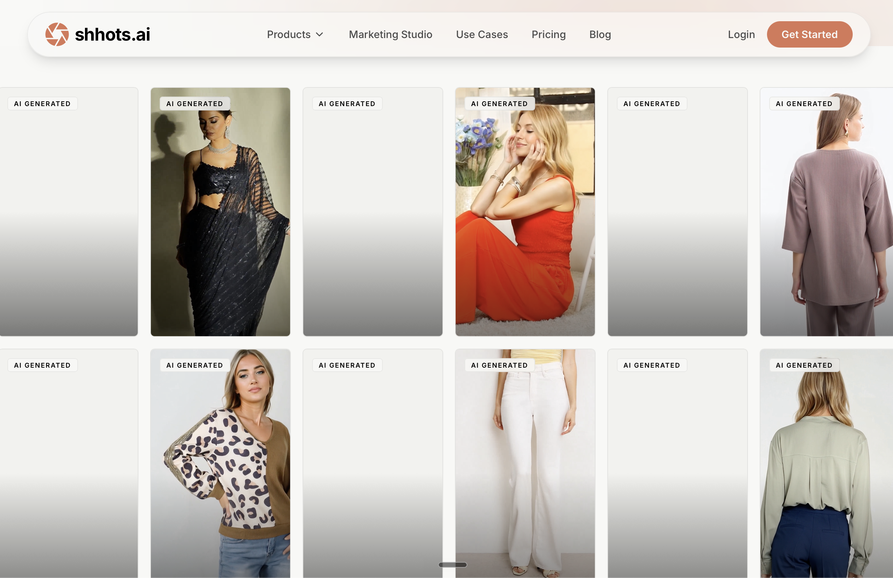

Best Shhots AI Alternatives (2026): Top 4 Tools Compared
Updated June 18, 2026·8 min read
TL;DR
Shhots AI generates polished ecommerce ads from product photos — but all content is AI-generated, the Starter plan caps UGC at 3 videos/month, and credits deplete quickly under heavy testing.
UGCDrop is the top alternative: 30 real human clip downloads for $28/month, instantly available, no AI generation involved.
For brands committed to AI-generated workflows, Creatify, HeyGen, and MakeUGC each fill a different niche at lower entry prices.
Shhots AI is a capable AI ad generator — genuinely useful for ecommerce brands that want to turn product photos into platform-ready video ads fast. But "no creators" is a feature and a trade-off. When authenticity drives conversions, when you need 20 hook variations not 3, or when AI labeling requirements start affecting your ad performance, you need a different tool. Here are the four best alternatives.
Why do marketers look for Shhots AI alternatives?
Shhots AI has a sharp focus: product photo in, ad video out. That focus creates real limitations for teams with broader creative needs.
Low UGC Volume on Entry Plan: The $19/month Starter only includes 3 AI UGC videos per month. For teams testing hooks weekly, that runs out by day 10.
All Content is AI-Generated: Shhots' own positioning says "no creators." For brands where real human authenticity is a conversion driver, no amount of AI polish changes that.
Credit System Volatility: A 2,000-credit monthly allocation distributes unevenly — 3 AI UGC videos, 6 cinematic videos, or 166 image generations. Teams that mix output types can exhaust credits faster than expected.
No Pre-Existing Clip Library: Every piece of content must be generated from scratch. There's no library to browse, filter, or draw from when you need inspiration or a quick variation.
AI Content Labeling Risk: Meta and TikTok are expanding requirements to label AI-generated ad content. Ads produced by AI tools may carry disclosure requirements that affect reach and auction performance.
3
AI UGC videos included in Shhots AI's $19/month Starter plan. UGCDrop's $28/month Pro plan gives 30 real human clip downloads — 10x the creative volume for $9 more per month.
Based on published pricing from Shhots AI and UGCDrop, June 2026.
UGCDrop — real human video UGC. The #1 Shhots.ai alternative.
The best Shhots AI alternatives, ranked
1. UGCDrop
Best for: Real human UGC & high-volume hook testingPricing: From $28/mo or $1.69/credit
UGCDrop is the strongest Shhots AI alternative for brands that need authentic, real human content. While Shhots generates AI approximations of creator-style ads, UGCDrop provides actual creator video clips — real reactions, genuine emotions, authentic micro-expressions — from a growing library of 100,000+ pre-shot clips. No AI generation. No synthetic faces. No disclosure requirements.
The volume math alone justifies the switch for high-frequency testers. Shhots AI Starter: 3 AI UGC videos for $19/month. UGCDrop Pro: 30 real human downloads for $28/month. That's 10x more creative assets for $9 more per billing cycle. The Unlimited Plan at $49/month pushes that to 100 downloads — enough to run a new hook variation every single day.
100,000+ Real Human Clips: Filter by emotion, age, gender, setting, clothing — find the exact creator style you need.
Instant Download: No generation queue, no credit burn on failed renders. Browse and download in under 2 minutes.
B-Roll Library Included: 100k+ B-roll clips bundled into every plan — no separate subscription needed.
Viral Hook Library: Pre-written scroll-stopping text hooks included — pair with any clip and launch.
No AI Disclosure Risk: Real human content carries no platform AI labeling requirements.
Best for: URL-to-video AI ads with free testing tierPricing: Free (10 credits); paid from $39/mo
Creatify is the closest AI-to-AI substitute for Shhots AI. The core workflow is similar — paste a product URL, Creatify scrapes the page, writes a script, picks an AI avatar, and generates a short video ad. It has a genuine free tier with 10 credits before requiring payment, making it the easiest first test for teams evaluating alternatives.
Creatify's paid plans start at $39/month, positioning it between Shhots AI's Starter ($19/mo) and Pro ($49/mo). Its ad intelligence layer — which pulls from a database of 30M+ competitor ads — gives media buyers creative benchmarks that Shhots AI doesn't offer.
How Creatify compares to UGCDrop
Creatify shares Shhots AI's fundamental limitation: all content is AI-generated. For brands where real human reactions drive trust and click-through rates, Creatify is a lateral move. For teams that are committed to AI-only workflows and want a free trial before paying, it's the strongest option in this category.
3. HeyGen
Best for: AI avatar ads at scale with free planPricing: Free tier; paid from $29/mo
HeyGen is the leading AI avatar tool for talking-head video ads. With 1,100+ AI avatars and support for 175+ languages, it covers global scale that Shhots AI's tighter product-photo workflow doesn't attempt. You type or paste a script; the avatar delivers it with realistic lip-sync. Custom avatar cloning — training HeyGen on your own face — is available on paid tiers.
At $29/month for the Creator plan, HeyGen undercuts Shhots AI's Starter price while offering significantly more avatar volume and a real free tier to test with. For brands running multilingual campaigns or needing consistent presenter-style content, HeyGen is the more focused tool.
How HeyGen compares to UGCDrop
HeyGen is purpose-built for AI avatar ads, not product photography. It does one thing very well. For brands that need both real human UGC reactions and AI talking-head capability, the answer is often UGCDrop for authentic hooks and HeyGen for scripted presenter content — not one tool for both jobs.
4. MakeUGC
Best for: Cheapest AI UGC entry pointPricing: From $29/mo
MakeUGC is the most affordable AI UGC tool on this list at $29/month, offering 10 AI UGC videos per month — more than triple the volume of Shhots AI's Starter plan at a higher price. It supports 35+ languages and has a straightforward talking-head workflow. The avatar quality is not as polished as Shhots AI or HeyGen, but for teams optimizing for cost per creative rather than production polish, MakeUGC delivers serviceable output.
There's no free tier, but at $29/month it's accessible enough to test without significant commitment risk.
How MakeUGC compares to UGCDrop
MakeUGC produces 10 AI-generated talking-head videos for $29/month. UGCDrop produces 30 real human clip downloads for $28/month. If authenticity matters at all to your brand or audience, UGCDrop delivers more content, real humans, and a lower cost per clip.
"UGCDrop has some seriously high quality human reactions. All their videos are spot on in terms of what's trending right now, especially all the different type of reactions and videos. Highly recommend if you're looking to source human UGC without breaking the bank."
— Gaurav, CEO of FastLane
At a glance: Top Shhots AI alternatives compared
Rank
Tool
Best for
UGC Volume — Entry Plan
Pricing from
1
UGCDrop
Real human UGC & volume hook testing
30 real human downloads/mo
$28/mo or $1.69/credit
2
Creatify
URL-to-video AI with free tier
10 free credits to start
Free; paid from $39/mo
3
HeyGen
AI avatars at scale, multilingual
Free tier available
Free; paid from $29/mo
4
MakeUGC
Cheapest AI UGC entry point
10 AI UGC videos/mo
From $29/mo
→
The Key Distinction
Every AI-based Shhots AI alternative on this list (Creatify, HeyGen, MakeUGC) shares the same fundamental limitation: synthetic content. UGCDrop is the only alternative in this category that replaces AI generation with a library of real human footage — a structural difference, not just a feature gap.

Shhots.ai — the tool our readers are replacing.
Frequently Asked Questions
What is the best Shhots AI alternative?
UGCDrop is the best Shhots AI alternative for brands that want authentic, real human creator content. It offers a searchable library of 100k+ real human clips starting at $28/month — with 30 downloads, which is 10x more content than Shhots AI's 3 AI UGC videos on its Starter plan.
Why do marketers look for Shhots AI alternatives?
The main reasons are: limited UGC video volume on the Starter plan (only 3 AI UGC videos/month), all content is AI-generated with no real human creators, and a credit system that can run out quickly when testing multiple variations. Brands that need real human reactions and higher testing volume look for alternatives.
Is there a free alternative to Shhots AI?
Creatify offers a free tier with 10 credits to test the URL-to-video workflow. HeyGen has a free plan for avatar videos. UGCDrop is free to sign up and search — you only pay when you download a clip.
Which Shhots AI alternative is best for high-frequency ad testing?
UGCDrop is the strongest choice for high-frequency testing. At $28/month, you get 30 real human clip downloads — 10x the UGC video volume of Shhots AI's Starter plan. There are no generation queues, no credit burn on failed renders, and no AI approximation of human authenticity.
Does Shhots AI use real human creators?
No. Shhots AI explicitly markets its "AI UGC Ads" feature as "creator-style ads, no creators." All content is AI-generated using models like Veo 3, Kling 3.0, and Seedance. For real human creator content, UGCDrop is the alternative.
30 real human clips. One subscription. No AI required.
Access UGCDrop's instant library of 100k+ real human creator clips and build high-converting ads without credit limits or generation queues.